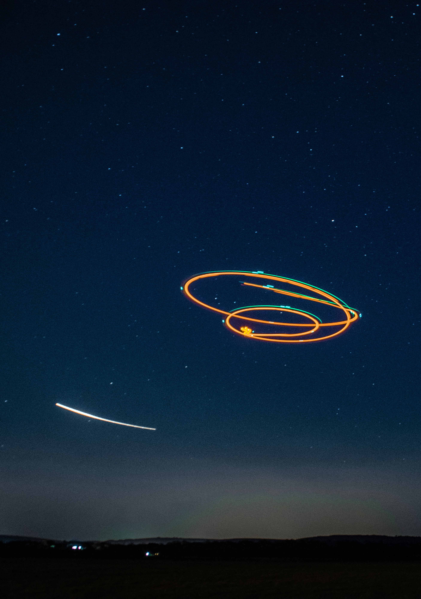
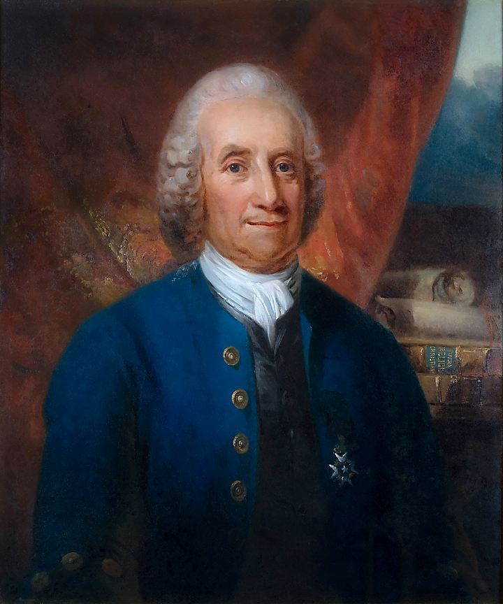
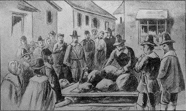

This Issue's Featured Story
Ancient Aliens
History and Concept
Since the late 1960’s people like Erich von Däniken have wondered things like- what if the pyramids of Egypt were made by otherworldly visitors, or if the Mayan calendar was created under the guidance of those same beings. What if many of the most technical creations of the ancient world were created by the design of extraterrestrials? The concept has fueled an entire school of thought that has aided science fiction and beyond. Even some television networks have started running with the idea in opinion programs. This decades long trend has become almost as mainstream as other household names. While the idea isn’t wholly new, it has expanded into the thought that much of religion is in fact derived from such visitations. Skeptics have in turn had a field day with these ideas, with some of the major detractions coming from many different areas. In recent years a number of events have been noted by believers that affirm their stance. Some of these moments include, but aren’t limited to, the Catholic Church stating that belief in extraterrestrials doesn’t contradict the belief in God or the church’s teachings, the recent COVID media storm around UFO sitings, and various governments releasing intelligence pertaining to secretive operations.
This overall concept of alien visitations being mistaken for divine intervention has made its way deep into popular culture on a number of fronts, film, books and video games all have connections to this idea in certain genres. Although there have been more popular ideas, something about this one is especially potent in science fiction storytelling. Field Note: Even video games like ‘Mass Effect’ have included these ideas into their folklore. Perhaps most notably is the monolith in ‘2001: A Space Odyssey’. It is possible that this image has more power because of it being displayed in a number of artistic mediums.
Some More Information
It’s not uncommon through time for claims to be created around ancient civilizations. In the book 1421: the Year China Discovered America, writer Gavin Menzies claims that China discovered the new world before Columbus. While this claim has been widely dismantled, it is true that the Chinese discovered many of the benefits of things like meditation and Tai Chi that are just now coming to the forefront of western science. The Iroquois nation is another instance where some scholars argue the civilization was much more advance than the Europeans would have noted. Even Howard Zinn makes comments on this in his work. While not all claims like these are noteworthy, some are.
Both the Persians and Egyptians have created structure that do in fact make scholars marvel, but even the grandest designs have some rather simplistic explanations. Even some groups like the Sumerians created things that are well beyond our understanding. The Greeks and the Romans created many things that we continue to rely on to this day, whether politically and scientifically, namely aquifer systems like canals. Field Note: I was once given a book about the Spaghetti Monster, the idea that because something couldn’t be disproved, it can thereby be reasoned that the world was created by a great monster made of spaghetti. Many historians often use similar analogies when explaining how paranormal theories arise around ancient cultures.
Some Theories
I would imagine anyone familiar with the Stargate franchise wouldn’t be unfamiliar with shows like Ancient Aliens. The idea that extraterrestrials would be mistaken as gods sounds, in the context of these forums, quite reasonable. Detractors suggest that there is no real way to validate such claims. Much of the archeological evidence can be used in either interpretation, as the particular item doesn’t change, but rather its purpose. Nonetheless there is a somewhat large movement growing that continues to suggest the cosmic god theory, for lack of a better term. Giorgio A. Tsoukalos has made these elements the core of his research, with mounds of information accompanying it. Field Note: The book ‘The Chariot of the Gods’ by Erich von Däniken among others point to a number of bible verses as well as evidence of the divine really being of an extraterrestrial nature.
In recent years the concept of ancient civilizations being more advance than we can account for by means of archeology and like minded schools of science has been given considerable thought. In fact, Buckminster Fuller and Alan Watts have both theorized that older groups of people may have had richer understandings of the world than modern western thinking would grant. The Persians, Egyptians and Chinese all have constructed monument that not only have stood the test of time but also seem to defy logic. There are theories as to how something like the pyramids may have been constructed but even much of that is still widely debated. Furthermore it can be said that the Silurian Hypothesis has gained noteworthy consideration.
Detractors like Michael Shermer have proposed numerous reasons as to why people of all kinds can be susceptible to theories that otherwise would seem unreasonable. Some critics have suggested the simple idea that because it sounds more exciting to say ‘aliens came to ancient times,’ it is more likely that it will stick in our mind, and even seem more believable overall. This is equally true in cases like the pyramids in Egypt, it is common for our minds to create a proportionate cause to any effect we deem grand. Another school of thought among believers is that the human race has been guided since our inception as a spieces, which would not only explain why extraterrestrials would have come in ancient times and explain further why we continue to have such occurrences in modern times. A number of groups have subscribed to this or a similar theory.
Other Articles this Quarter
Emmanuel Swedenborg: Visions of the Afterlife?
While few textbooks might include his name, there was a time when Emmanuel Swedenborg was one of the most important men in Europe. Swedenborg has inspired many groups through the centuries since his departure from this world, but if he were to be trusted, this world is only the surface of existence. In the 18th century, Swedenborg was one of the most revered minds in his home of Sweden. While he contributed to many things in his life, he is mostly remember for a series of events that occur much later in his life. Despite his accomplishments in neuroscience and astronomy, Swedenborg would write a series of manuscripts in which he recorded a number of journeys to the afterlife. In these writings he included conversations with angels and wisdom that he learned from the realm.
In popular culture both literature and film, Swedenborg’s ideas have indirectly and directly influenced to some of the biggest pieces. Furthermore a number of scholars have studied his work, both from the point of view of believers and skeptics alike. In the 19th century Swedenborg’s ideas would help fuel the American thought movement known as Transcendentalism. While outside of Christian circles Swedenborg is mostly unknown, many of his ideas are similar to many religions from all walks of life.
Some More Information
This is well past the key moments of Martin Luther, the perceived founder of Lutheranism. From the time that Luther posted his referendum on Catholicism in 1517 and well through Swedenborg’s life, Lutheranism plowed its way into into the ordinary households of Europe. The following centuries were crucial as it opened a door to new modes of thinking. While many of the thinkers of the Enlightenment were christians in general, a surprising number of them had become some form of Protestant.
Also during this time was a certain rise in a type of thought sometimes referred to as Deism, while the academic terms are different, it isn’t far off from being a naturalist or Transcendentalist. Deism is typically referred to as the belief of god not as a creator per se, but as being a part of nature and being able to be expressed by logic and reason. Given the time of Swedenborg’s life, thinkers like Voltaire and Spinoza were already well established and began raising many of the concepts of God as a function of nature, or more accurately, nature as a function of God. This would provide a hybrid that we still see today of science and faith merging into one understanding.
In his own time many people were skeptical of his claims. Swedenborg’s life spanned the time of the European enlightenment. So logic and science were beginning to rule the day. Ralph Waldo Emerson believed that Swedenborg really saw something and often talked about him in his essays. While not always directly saying it, Emerson would draw similarities between Swedenborg’s accounts and Hinduism. Accounts which Emerson tended to refer to as “illuminations”. Interestingly, the German thinker Immanuel Kant has eluded confirmation on these ideas. Some scholars believe that Kant was a skeptic of Swedenborg’s claims, while other scholars believe that Kant found them to be true.
In one of his last novels, writer Richard Matheson explored the mythology of faeries. In the novel he draws comparisons from their world to the descriptions laid out by Swedenborg. This also was not the first time that he acknowledges Swedenborg in his writing. Matheson was known later in his career to spend an ample amount of time studying anything that he found interesting, and even wrote a non-fiction book based on his beliefs about the afterlife. It is rare, if ever, to see Matheson refute the ideas of Swedenborg.
Some Theories
When it comes down to it on this one, people are pretty well divided into two categories on the subject. The first camp is made of believers. There is still an operating foundation dedicated to studying Swedenborg’s work. They provide translations, but given the abilities of the internet, many translations are with in arms length. While there are believers even into the present, there are still disputes as to what his work actually means. While there are foundations dedicated to his work, much of it has become academic and when put politely, poorly complied. There are also foundations that seem to be solely interested in commercializing his work. However, there is a current of writers and scholars that look to Swedenborg as proof that there is an afterlife, and moreover that there is a connection from this world to the next.
Skeptics from all ages have emerged. Arguing that his “findings” are nothing more than fantasy or some sort of hallucination. Some argue that they were made up entirely. While in modern times he has been largely forgotten, there are still detractors to his claims. In his own time he face scrutiny of all sorts. Swedenborg would be responsible for one of the most elaborate pranks in all of known history if it were indeed the case that he had made it all up. The only problems about the theory that he made it up out of thin air is there seems to be no motivation for doing such a thing, if it were to be untrue, it may be more likely that he was under some sort of hallucination.
Extra Stories
Salem 1692
Background
In the small village of Salem, Massachusetts a series of events would rack the foundation of the colonies and provide a large-scale mystery for centuries to come. In the late 17th century, starting in February 1692 accusations of witchcraft would turn into one of the largest crime related witch-hunt resulting in the executions of more than a dozen people and the imprisonment of more than two dozen. It started when a number of young girls, primarily Elizabeth Parris and Abigail Williams, began accusing a range of people throughout the town. Among the first accused, a young slave woman named Tituba, who reportedly practice taboo forms of religion and the rituals were similar to that of Voodoo. Field Note: Tituba’s role is important to some and less important to others, but all accounts of the story include her both in the beginning and at the moments when she is being questioned.
As the accusations escalated, proud churchgoers began coming under fire from the young girls accusations. While most of the methods to text for witches is not only outdated but obviously superstitious, even to some in that time, many of these tactics were employed time and time again. The events came to an end when resident Giles Corey was arrested. Corey refused to admit to witchcraft, and was then condemn to a punishment that would likely get him to confess. A door was placed on Giles Corey as he was lying on the ground, then little by little stones were placed on the door, slowly crushing Corey to death. After a substantial amount of time, the torture was stopped to allow Corey the opportunity to confess. But it is reported that simply uttered one phrase only, “more weight.” After the death of Corey, the state government began looking into the methodology used during the witch trials.

Some More Information
These sorts of trials weren’t uncommon at the time. A series of trials took place in England not long before based on similar premises. Many sects of Christianity have engaged in similar activities over the course of history. Witchcraft in particular seems to have a strong opposition throughout Christian history. While somewhat different according to practitioners, witchcraft and paganism seem to often become scapegoats in the early days of the religion. It was also seen as the duty of all religious people to expose and fight against evils such as witchcraft. Also inter-church fighting occurred between Protestants and Catholics in English society, the most notable events occurring in Northern Ireland.
Like any other time, political conflicts big and small factored into the Salem Witch Trials. A number of the accusations seem to have been made merely due to tensions within the small town. It is also important to recognize that not all the citizens of the village of Salem were Christians. Despite the legends passed down about the early colonies, some people came to the new world for reasons other than religion. A surprising number of the accused would fall into the secular category, as well as religious persons that did not regularly attend services. Another aspect of the time was the judge and preacher. Judge and clergyman Cotton Mather and preacher Samuel Parris, father of one of the accusers. Their motives have been widely questioned and Mathers has a length list of problems on his resume. The colonies were fairly self-sufficient at the time given the length of time it took to communicate back to the European continent, leaving a large amount of power at what is equivalent to the state level in modern times.
Some Theories
A biological explanation that has persisted throughout time has been the Ergot theory. Spoiled ergot turned into a rye bread could give rise to hallucinations. While this idea was more popular decades ago, some historians still haven’t ruled it out. Critics of the theory argue that ergot wasn’t exactly the grain of choice in the region at that time. Furthermore it seems unlikely to some as the farmer culture would have been greatly aware of such an ailment.

One of the most persistent theories has been that the young girls merely faked it. At first for attention and later under fear of punishment. While there is some reason for this to be likely, many push back on this idea as there isn’t exactly a smoking gun to point to that. There is a persistence in the children’s behavior that would suggest that there was something more at work. Proponents of this concept argue that the girls lived in a time in which women had so few outlets that it could have fueled the idea.
Another possible solution involves Tituba. It is reported that some of the accusers engaged in rituals with young Tituba. It was widely speculated that she was practicing black magic, but was probably more like Voodoo. If the girls did these things it is possible that the fear both in the moment and after led them to believe things they otherwise wouldn’t have. Or even more simply, they really thought normal things were evil in the aftermath.
Interestingly another theory involves Samuel Parris and his position as town preacher. As his daughter is among the accusers, it has been speculated by some that if it were faked, it was under the guidance of Sam Parris. As previously stated, not all the people in the town were churchgoers. Some historians wonder if this wasn’t a ploy to help the church financially by driving up attendance. A variation on this idea is that Sam Parris discovered the faked behavior some time into the events and encouraged the girls to accuse anyone that Sam Parris had a grudge against.
There are also more Hollywood theories, but many of these can only speculate and are not always founded in evidence. Paranormal activity has been reported in more recent times rather than in the time of the trials themselves, including ghost sightings and an oddly high number of health problems in office of sheriff for the county. Giles Corey, according to urban legends, cursed the sheriff and all those who would fill that office, his ghost too, is reported to still walk in the area.
Looking at Roswell
Background
In the southern half of New Mexico, near a sleep little town call Roswell. The year is 1947. Something crashes in the desert and is recovered by local authorities. Accounts vary, but the incident spawned possibly the most well known paranormal occurrence in modern history. The story from authorities has been mostly about a downed weather balloon. But the common story has always hovered around an extraterrestrial craft crashing. This has now been wrapped into the town’s identity and is a popular attraction in the state. Field Note: When I was a child, I remember watching a show on the history channel in which it explained that the weather balloon was made of a silver material and is the reason that it was at first mistaken for something other worldly. But it is worth noting that the story of an extraterrestrial has persisted over most.
It is possible that nothing may have happened, but the event is so widely known that almost everyone has a theory, and given the strictly secretive nature of the cold war security apparatus, if anything was actually found from there, it is likely that we wouldn’t know the whole story for years to come. It’s worth mentioning that the craze of a UFO in Roswell really took off in the 1970’s. Popular culture has used the story for multiple types of stories. Even in recent years, with the freedom of information act and US leaders releasing formally classified materials, there really hasn’t been as much as one might expect on this topic. Even a couple of US presidents have made remarks in regards or reviewing the materials from that incident.
Some More Information
Post WWII the US had created a couple of agencies to ensure a number of things. The NSA was created to ensure that another Pearl Harbor couldn’t happen. In the late 1940’s the CIA was created for detailed espionage and intelligence to defend against the communist forces. Coincidently the CIA was founded in 1947, the same year as the Roswell crash. This has fueled theories of all sorts, but given the depth of the Cold War, it is entirely plausible that these agencies have nothing to do with any paranormal activity of any kind. Security from this era was often tight, with only really the Watergate scandal in the 1970’s pealing back some of the measures. This would stay somewhat the same into the 9/11 era and the War on Terror with the creation of DHS. There are still some, if not most of the measurements of these eras in place.
 There is also a cottage industry that has popped up around the idea of aliens crashing. While the idea of aliens crashing being true may have stimulated this sector, it is safe to say that there is a somewhat thriving ecosystem. There are some solid arguments for why the evidence of alien life in this area is mostly a hoax. However, given both the air force base and other military and industrial establishments there is also solid reason for why scientific beings from another world might come to check things out. From an anthropological angle the Roswell incident and aftermath represent some of the most interesting movements in societal evolution. This includes how the story became popularized, and also how many people have formed well thought out opinions on what could have happened. Writer Joe Nickell has even coined a phrase ‘Roswellian Syndrome’ for how a story can be debunked but a theory may persist.
There is also a cottage industry that has popped up around the idea of aliens crashing. While the idea of aliens crashing being true may have stimulated this sector, it is safe to say that there is a somewhat thriving ecosystem. There are some solid arguments for why the evidence of alien life in this area is mostly a hoax. However, given both the air force base and other military and industrial establishments there is also solid reason for why scientific beings from another world might come to check things out. From an anthropological angle the Roswell incident and aftermath represent some of the most interesting movements in societal evolution. This includes how the story became popularized, and also how many people have formed well thought out opinions on what could have happened. Writer Joe Nickell has even coined a phrase ‘Roswellian Syndrome’ for how a story can be debunked but a theory may persist.
There is also footage of an alien autopsy, pictures and testimonies that was supposed to have leaked. While it all has been both the subject of criticism and glorification, it remains one brick in the wall of the overall story. While there are a number of accounts of people that were involved in one capacity or another there is equal, if not more, criticism. There have also been a wide range of debunking operations surrounding this material.
Some Theories
When it comes to Roswell, it is possible that a downed weather balloon was all that was recovered. Joe Nickell provides a number of reasonable explanations. Also with the slew of documentation being released during COVID about how the government knew what it knew, I found it interesting that nothing Roswell related really seemed to make headlines. There is a possibility that the full truth isn’t know but the reasons why it’s classified could be rather boring. There are sometimes very basic security measures in place, as releasing reports could give insight into how intelligence agencies or the military conduct their work. Field Note: Vice made a good piece about the Roswell incident. It is worth checking out to hear more about Joe Nickell’s position.
What if an alien crash did occur? Well it is likely much of what is stated about the intelligence agencies still applies. To gain the upper hand in technology at a time when atomic weapons were becoming more commonplace. There are even groups that claim to understand the crash and trajectory of a potential flaying saucer. Some people also have claimed to have found various artifacts. This would be understandable as it is commonly said that military facilities are sometimes under alien surveillance. New Mexico is also well known for paranormal activity, which has fed into this mythology. Field Note There are even competing theories among believers as to happened. Depending on the decades the various positions have evolved, but there are even people in the industry not interested in promoting the idea.
There are also a wide range of alternative theories, more than can be quickly listed. A worthy note would be to mention again that New Mexico is well known for various paranormal myths. Of all stories like this that have been covered this is arguably the best known. All sorts of experts have weighed in, and will likely continue to weigh in. Although the most constant theories are based on the existence of aliens, of all the cases in US history there is a strong current of skeptics.